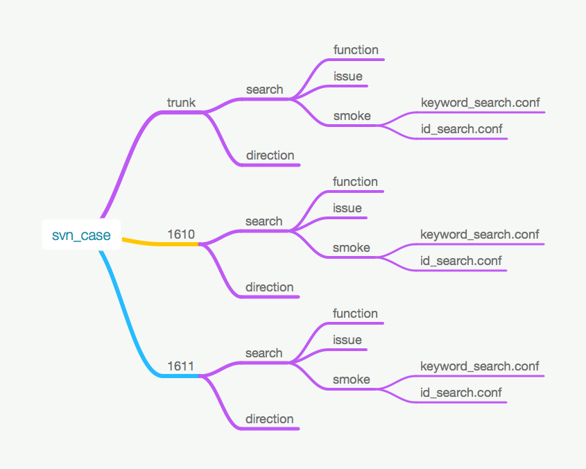

啄木鸟简介⤻结构⤻项目⤻版本⤻服务⤻目录结构⤻服务配置⤻支持的请求类型⤻支持的数据交换协议⤻通用配置⤻服务配置⤻字段配置⤻protocol buffer⤻http get⤻http post⤻CASE编写⤻格式⤻请求⤻预定义字段⤻移除默认字段⤻示例⤻case关联⤻case循环⤻自定义脚本⤻支持的参数列表⤻http get⤻http get 拼接path⤻预期结果⤻格式⤻预定义字段⤻保留关键字⤻支持的操作符⤻变量⤻操作过滤结果数组⤻语句⤻函数⤻结果表达式⤻示例⤻注意⤻参数化⤻参数化传值方式⤻测试用例文件中配置⤻通过接口实时拉取参数⤻通过参数化文件配置参数⤻JSON参数化文件⤻csv参数化文件⤻xls、xlsx参数化文件⤻rp.conf实时获取参数文件⤻定时任务⤻服务对比⤻整体内容对比⤻指定字段对比⤻不同接口之间的对比⤻测试运行⤻高级选项⤻按顺序执行测试用例⤻自定义运行URL⤻不同版本服务对比执行⤻自定义服务对比规则⤻自定义通用验证规则⤻按测试用例优先级过滤执行测试用例⤻按标签过滤测试用例⤻自定义执行用例并发数⤻自定义用例执行间隔⤻自定义运行时间⤻自定义用例失败重试次数⤻自定义用例失败重试间隔⤻自定义运行终端⤻参考⤻定时任务表达式 结果表达式字段配置服务参数列表
因现在使用的接口服务多种多样，每个服务的请求、响应格式都不相同，需要针对每一类服务都开发对应的自动化测试工具，因此，开发了该测试工具，尽可能的做到通用，防止重复发明轮子。
使用项目、服务、版本来管理不同项目的多个服务，以及每个服务的多个版本。
大体上的管理结构如下：
xxxxxxxxxx--项目(snowman)--版本1(1701)--服务1(搜索)--服务地址--服务2(导航)--服务地址--版本2(1702)--服务1(搜索)--服务地址--服务2(导航)--服务地址--服务3(取图)--服务地址
用于区分不同的业务线，比如：公交、搜索等，针对每个项目，可以配置自己独立的SVN路径，SVN路径需要配置到版本目录的上一级目录（现暂时只支持通过SVN管理CASE）。
每个项目都有自己单独的版本，比如：735，736等。
业务线提供的服务，比如：搜索除了搜索以外，还有GEO、RGEO等子服务。
每个服务都需要通过XML配置服务的基础信息，包括请求类型、返回结果类型等等。具体可参考服务配置
通过SVN 组织、管理CASE的时候，需要按照 版本->服务 的目录结构组织。例如，snowman项目的svn目录结构如下：
xxxxxxxxxx--svn_case--版本1--服务1--测试用例1（文件夹）--测试用例1-1（文件）--服务2--测试用例2（文件）--版本2--服务1--测试用例1（文件）--服务2--测试用例2（文件）

针对以上目录，名称为snowman的项目svn路径配置，需要将svn路径配置到case这一级：http://domain/svn_case
版本、服务必须在系统中存在（包括大小写都必须一致），否则运行的时候，会无法匹配上CASE目录
针对不同的请求类型，配置格式有所不同。有一些是通用的配置，所有的配置文件都是以xml进行配置。
注：配置可通过服务管理页面直接添加
现支持以下几种格式的请求类型：
现在支持解析、比对的响应格式有以下几种：
一个最简版本的配置如下：
xxxxxxxxxx <root type="HTTP_POST" requestType="JSON" resultType="XML" resultCharset="GBK" requestClass="com.snowman.test.Request" responseClass="com.snowman.test.Response" threads="5" messageId="44"><description><![CDATA[测试服务]]></description><property></property></root>其中
messageId 为snowman项目特殊使用，因为snowman的应用会使用messageId来标识服务入口
threads 代表运行时，默认应当使用多少线程来运行该服务的测试用例
注1 会优先使用传入的值来替代默认值
注2 同时选择多个服务运行时，因为所有的服务都是合并到一起运行，默认会使用第一个有值的服务。
注3 若运行时，选择的是ALL，也就是运行所有服务时，该参数会被忽略，因取值时，默认按服务名过滤。
type代表请求类型，现支持的值如下：
resultType代表服务返回的格式，现支持：
PB (protocol buffer)
JSON
XML
BINARY —— 会将二进制返回结果以base64进行转码，用于储存、展示
IMAGE — — 会将图片转码成base64的形式，用于在结果页展示。返回的格式为：
xxxxxxxxxx<img src='data:image/imageTpye;base64,encodeBase64String'>
CUSTOM —— 自定义response解析，比如：需要对结果进行预处理，需要指定实现了ICustomResponseParser接口的responseClass，使用指定的responseClass执行，返回结果需要为object或者jsonString
requestType代表发往服务器的请求格式（HTTP_POST才使用该字段），现支持：
requestCharset生成请求是使用的字符编码，若不做配置，默认使用UTF-8。
resultCharset代表服务返回结果的字符编码，若不做配置，默认使用UTF-8。
requestClass 请求类型为PB时，向服务器发送请求时，指定用于执行merge生成PB的类。
当类型为CUSTOM时，必须指定自定义发送请求的requestClass，requestClass需要实现ICustomRequestParser接口。
responseClass 当类型为CUSTOM时，必须指定自定义结果解析的responseClass，responseClass需要实现ICustomResponseParser接口。
executorClass 当类型为CUSTOM时，必须指定自定义结果解析的executorClass，executorClass需要实现ICustomCaseExecutor接口。
description对服务进行概要描述，不是必填选项，但是推荐填写，用于生成帮助文档。
在根节点下面，可以有多个子节点，会通过配置的子节点与CASE相匹配，生成对应的请求，示例子节点如下：
xxxxxxxxxx <property> <description>交通工具换乘避免，多个值使用逗号分隔</description> <allowable-values><![CDATA[ AVOID_OTHER,AVOID_METRO -- 避免地铁,AVOID_RAIL,AVOID_LIGHT_RAIL,AVOID_BUS -- 避免公交,AVOID_FERRY -- 避免轮渡 ]]></allowable-values> <name>orgin.waypointId</name> <parent>DirectionsRequest/originWaypointTyped[0]</parent> <field>waypoint_id/muid</field> <type>long</type> <linkproperty> <field>waypoint_type</field> <type>enum</type> <value>WAYPOINT_ID</value> </linkproperty> </property>对应标签的含义，可参考字段配置查看配置示例：
name 编写CASE时使用的字段名，单个配置文件要求唯一
parent 字段路径
field 实际请求中的字段名，当以@开头，表示这个是xml中的属性
type字段类型，现在支持的字段类型如下：
linkproperty 关联的常量字段，可有多个。例如：当A字段存在，那么B字段的值必定为C，这时候，可以使用linkproperty，在配置A字段时，将B字段的值设置为C，详细可参考字段配置
subproperty 可用于配置添加一些自定义类型，用于一些带有子字段的可重复字段。详细可参考 字段配置
description 字段描述，非必填项，但是推荐填写，用于生成帮助文档
allowable-values 取值范围，不同值之间使用逗号分隔，非必填项，但是推荐填写，用于生成帮助文档
default-value 默认值， 当节点存在默认值，就算不声明也会生成，若声明了，会优先使用声明的值，若想清除默认字段，可在用例中将值设置为null
ignore 是否忽略当前字段， 当某一字段不再使用，或者只是中间过程使用的时候，可设置ignore字段，为true则字段会忽略不参与最终的请求拼接
order 排序，取值为正整数，会按照指定的顺序来排列字段，并按照指定的字段顺序来拼接请求，
extend 扩展字段，可输入任意值，在预处理的时候，可使用该扩展字段做一些特殊处理
repeatable 非必填项，但是推荐填写，用于生成帮助文档表示字段是否可重复，取值：true , false
required 非必填项，但是推荐填写，用于生成帮助文档表示字段是否为必填字段，取值：true , false
例如： 有以下配置：
xxxxxxxxxx <root type="HTTP_POST" resultType="JSON" resultCharset="GBK" requestType="XML"></description> <property> <name>request_src</name> <parent>request</parent> <field>@reqsrc</field> <type>string</type> <linkproperty> <field>@reqtype</field> <type>string</type> <value>0</value> </linkproperty> <default-value>snowman</default-value> </property> <property> <name>request_version</name> <parent>request</parent> <field>@vers</field> <type>string</type> <default-value>2.1</default-value> </property> <property> <name>request_version</name> <parent>request/route</parent> <field>@type</field> <type>string</type> <default-value>0</default-value> </property> <property> <name>request_version</name> <parent>request/route</parent> <field>@flag</field> <type>string</type> <default-value>0x40</default-value> </property></root>假设编写以下case
xxxxxxxxxx__name__ = "test default value"__request_src__ = "snowman2.0"
那么 ，实际解析出来的请求为：
xxxxxxxxxx<?xml version="1.0" encoding="UTF-8"?><request vers="2.1" reqtype="0" reqsrc="snowman2.0"><route type="0" flag="0x40"/></request>
vers、type、flag没有在用例中声明，同样会在请求中使用默认值生成
protocol buffer的一个初始配置：
xxxxxxxxxx<?xml version="1.0" encoding="UTF-8"?><root type="PB" requestClass="com.apple.geo.protobuf.geo3.Directions.DirectionsRequest" responseClass="com.apple.geo.protobuf.geo3.Directions.DirectionsResponse"></root>
其中， requestClass指明需要将请求封装成什么样的protocol buffer message，
responseClass 指明需要使用哪个protocol buffer message解析服务器返回的二进制数据流。若指定的class没有在啄木鸟工程内，需要将对应的jar放置到对应的目录下。
除了初始配置以外，还需要配置请求参数。一个示例的请求参数如下：
xxxxxxxxxx<property><name>orgin.waypointId</name><parent>DirectionsRequest/originWaypointTyped[0]</parent><field>waypoint_id/muid</field><type>long</type><subproperty><field>waypoint_type</field><type>enum</type><value>WAYPOINT_ID</value></subproperty></property>
详细配置方法，请参考字段配置
一般的http get请求，直接使用最简版本的配置就可以了，若为了便于阅读，要为url参数添加别名，可在配置文件中添加属性。 例如：
一个HTTP_GET的URL是： /busEngine?A1=110105&A2=230803&X1=116.48043201434153&Y1=39.9895948721543&X2=130.361008&Y2=46.810871
针对参数A1,A2不是很好理解，无法一眼看出代表的什么含义，可以配置文件中添加属性（注：因为http get都是url格式，不需要配置type、parentpath等相关属性）：
xxxxxxxxxx<property><name>orgin.citycode</name><field>A1</field></property><property><name>destination.citycode</name><field>A1</field></property>
在编写CASE的时候，就可直接使用：
xxxxxxxxxx__orgin.citycode__=110105__destination.citycode__=230803
在解析CASE的时候，会直接把orgin.citycode解析成A1，destination.citycode解析成A2
根据请求的格式不同， 现在支持xml以及json两种， 但是配置方面都保持一致性，配置方式没有差别。
详细配置方法，请参考字段配置
一个典型的CASE如下：
xxxxxxxxxx# 这是一个注释，# 注释可以有多行__name__ = "纯步行路线 - 小于600m zh-Hans_CN"__orgin.waypointPlace__ = "39.990173,116.482296"__destination.waypointPlace__ = "39.990173,116.483296"__transportType__ = "TRANSIT"{match_count=1with .etaResult{.status = "STATUS_SUCCESS".placeSearchResponse.status = "STATUS_SUCCESS"with .sortedETA{.transportType = "TRANSIT".status = "STATUS_SUCCESS".distance > "400".travelTimeBestEstimate > "360"}}.match_count=1}
注：请求与预期结果之前不能有空白行，不同CASE之前通过空白行做分隔（空白行可以有多个）
每个请求都是由多个请求字段组成的， 一个请求字段的格式要求：
以两个下划线开始，以两个下载线结果，后面接字段对应的value,
xxxxxxxxxx__fieldName__ = "value" // 双引号__fieldName__ = 'value' // 单引号__fieldName__ = "$(LangUtils.currentTimeMillis())" // 支持使用函数
注：若value中有双引号，则应该使用单引号，反之使用双引号，例如：t = 'a"b',同时，最后一个单引号或者双引号的内容会当作注释忽略，例如：t = 'a"b' //comment 取到的value为a"b
注意：如果需要使用project、service、env这三个预定义字段，一定在用例最开始声明，因为用例按照从上到下的顺序解析，若不放在最开始，会导致用例中声明的这三个预定义字段失效。
正确用法：
xxxxxxxxxx__name__ = "test"__project__ = "snowman"__service__ = "eta"__env__ = "1808"
错误用法：
xxxxxxxxxx__name__ = "test2"__field1__ = "value"__env__ = "1809" // env在service之前声明，会直接使用运行时传入的service作为初始值去查询对应的url信息，而不会使用eta作为查询条件__service__ = "eta" // service在字段field1之后声明，会导致field1使用运行时传入的service作为初始配置，而不会使用eta的servcie配置信息
有几个通用的预置字段如下：
xxxxxxxxxx__name__ = "用例名称"__tag__ = "用例标签" // 可根据标签对case进行过滤，按标签执行测试用例__project__ = "snowman" //子CASE所属项目，若没有该字段，则直接使用父CASE的project__start__ = "subclass" //存在关联关系的子CASE开始__service__ = "eta" //子CASE所属服务，若没有该字段，则直接使用父CASE的service__env__ = "1508" //子CASE运行环境，若没有该字段，则直接使用父CASE的env
__name__ 是必填选项，若没有该case会直接忽略，不做解析、执行，取值要求同一个CASE文件中保持唯一（不唯一不会导致执行失败，但是后续要做的CASE对比默认使用CASE名称做为匹配项，若有重复，可能导致匹配结果不正确的情况）
__tag__ 用例标签，例如：p1；一个用例支持有多个tag，一个tag也可有多个值，多个值使用 逗号 分隔，运行测试用例的时候，可指定tag进行过滤，只运行指定tag的测试用例。tag有一个预定义值 ：skip ，若为测试用例添加一个tag值为skip，那么在运行的时候，会直接忽略不运行。
__priority__ 用例优先级，当用例不指定优先级时，默认优先级为P4，可取值：
__run_url__ 指定运行环境，注：应当只在做服务监控时使用，正常case请勿使用，会导致case变得混乱
__url_path__ 指定URL后缀路径，适用于同一个服务有不同的后缀情况，例如：restfull风格服务，可参考http get 拼接path
__url_param__ 指定URL的参数，可重复，正常HTTP_GET、HTTP_OPTION、HTTP_DELETE请求不需要使用，该字段专用于类型为HTTP_POST，同时，又需要在URL当中附带参数的特殊情况。可重复存在。
例如：
xxxxxxxxxx有一http post的服务A，请求格式为json 配置的服务url为 http://stage.test.com/server , 假设需要编写的测试用例内容如下：url : http://stage.test.com/server/interface?filter=true¶m=1body: {"abc":123}那么测试用例可以这么写：__name__ = "test"__url_path__ = "interface"__url_param__ = "filter=true¶m=1"__abc__ = 123或者__name__ = "test"__url_path__ = "interface"__url_param__ = "filter=true"__url_param__ = "param=1"__content__ = '{"abc":123}'
__start__ 表示关联case开始，详细可查看case关联
__end__ 表示关联case结束，详细可查看case关联
__do__ 表示循环开始，会生成关联用例执行。详细可查看 case循环
__sleep__ 表示暂停指定时间，循环当中可使用，普通的子用例当中也可使用，单位 秒，详细可查看 case循环主题
__max_loop__ 表示循环的最大次数，默认为100，详细可查看 case循环
__while__ 表示循环的判断值，详细可查看 case循环
__project__ 关联case所属项目，注：应当只在case关联使用，防止CASE变混乱
__service__ 关联case所属服务，注：应当只在case关联使用，防止CASE变混乱，若使用，需要保证这几个最先声明
__env__ 关联case运行环境（版本），注：应当只在case关联使用，防止CASE变混乱
__max_retries__ 当执行失败时的最大重试次数，当取值大于等于1时，会重试的次数，
__retry_interval__ 重试间隔时间，单位 秒，搭配 max_retries一起使用，默认不间隔
__content__ 直接使用content的值做为请求内容，不执行解析等操作，当单独的请求字段与content中的内容有冲突时，会覆盖content中的原有值。注：当请求类型为HTTP_GET时，不会覆盖，只会在url后面追加
__content_base64__ 当请求类型为PB/BINARY时使用，针对PB类型，会先解码base64，然后在解码的内容基础上添加附加的字段，针对binary格式的请求，会直接拿该base64的内容解码，并作为请求内容发送
__header__ 需要添加的头信息，可以存在多个header，值格式为：key:value ，例如：Origin:https://foo.itunes.com
__template__ 使用模板。针对测试用例里面一些重复度很高的标准脚本，可以通过添加模板的方式，减少重复量，并降低共用模块修改时，需要指修改测试用例的问题。例如，假设有以下测试用例:
xxxxxxxxxx__name__ = "query survey list"__start__ = "login"__service__ = "survey_auth"__url_path__ = "validate"__token__ = "${token}"__save_cookie__ = "true"__end__ = "login"__use_cookie__ = "login"__url_path__ = "/services/directory"{http_code = 200}
其中，登录部分、使用cookie部分，是通用部分，那我们可以在script当中添加一个名叫login的template类型的script，内容如下：
xxxxxxxxxx__start__ = "login"__service__ = "survey_auth"__url_path__ = "validate"__token__ = "${token}"__save_cookie__ = "true"__end__ = "login"__use_cookie__ = "login"
那么最开始的测试用例，可以修改为：
xxxxxxxxxx__name__ = "query survey list"__template__ = "login"__url_path__ = "/services/directory"{http_code = 200}
在运行时，会把__template__ = "login" 解析成对应tmeplate里面的内容，并运行。
__request_script__ 使用自定义脚本对request进行处理，并以处理后的结果作为request，支持python以及shell脚本，详细可查看 自定义脚本 主题
__response_script__ 使用自定义脚本对response进行处理，并以处理后的结果作为response ，支持python以及shell脚本，详细可查看 自定义脚本 主题
__response_check_script__ 使用自定义脚本对response进行检查，检查失败（若输出的内容不为空，则认为检查失败，会把输出的内容当作错误信息给出）CASE执行失败，通过则继续与预期结果进行对比。支持python以及shell脚本，详细可查看 自定义脚本 主题
__request_class__ 请求类型为PB时，向服务器发送请求时，指定用于执行merge生成PB的类。
当类型为CUSTOM时，必须指定自定义发送请求的requestClass，requestClass需要实现ICustomRequestParser接口。
__preprocess_class__ 主要用于对用例字段进行预处理，使用场景在于，需要对请求字段进行一些特殊处理，比如：根据字段内容加密，但又想复用后续的结果拼接（xml/json/pb等）。需要实现ICustomRequestPreprocess接口。
__executor_class__ 主要用于非标准http请求的用例执行，比如：redis/sql的执行，需要实现ICustomCaseExecutor接口。返回结果为byte[]数组，数组内容可为json string、pb、javabean等等，具体返回的内容，需要与result_type相匹配。
__response_class__ 当返回结果类型不是PB时，需要实现ICustomResponseParser接口，返回结果类型可为:
com.google.protobuf.Message —— 会转换成可读格式
String —— String的内容类型需要与resultType指定的一致，
普通的javabean —— 会自动将javabean转换成对应的json。
有一个预定义的class：com.snowman.driver.custom.response.SaveResponseToFile 将response存放到本地文件，并返回文件路径，再配合__response_script__ ， 可实现通过python对返回结果做任务处理，转换。 比如：返回结果是一个普通的换行分隔的文本，可以先存到本地，然后配合__response_script__ 使用python脚本，将文本转换成json结果返回。这样，就能对文本结果做一些细化的校验。
__type__ case类型，用于标识应该使用哪种方式发送请求，可取值 ：
__request_charset__ 请求的编码类型， HTTP_GET会使用该编码对请求对编码
__request_type__ 请求类型，不填写默认为URL，可取值：
__response_charset__ 返回结果的编码类型，默认为UTF-8
__response_type__ 返回结果类型，可取值：
__save_cookie__ 缓存当前用例的cookie，用于接下来使用，可取值：
__use_cookie__ 使用缓存的cookie，值为对应的关联case名称。例如：
xxxxxxxxxx#缓存login的cookie，关联case prepare使用login的cookie，并更新cookie，主case 使用prepare更新后的cookie。__name__ = "testCookies"__start__ = "login"__request__= "request"__save_cookie__="true"__end__ ="login"__start__="prepare"__use_cookie__="login"__save_cookie__="true"__end__="prepare"__mainCase__="request"__use_cookie__="prepare"
注：request_script/response_script/response_check_script 暂只支持python、shell脚本，执行时会将脚本的所有控制台输出当作执行结果
注2 ：参数化只支持所有非预定义字段以及以下部分预定义字段：content、content_base64、request_script、response_script、response_check_script、run_url、url_path、url_param、header、request_class、response_class、response_charset、request_charset
在字段配置时，设置了default-value的字段，在每个用例当中都会自动将该默认字段加入进去，不管有没有在用例中指定，若在某些情况下，希望将默认字段在用例当中删除，可将对应字段的值设置为null。
例如，配置了如下默认字段：
xxxxxxxxxx<property><name>channel</name><field>channel</field><type>string</type><default-value>aostest</default-value><extend>1</extend><order>1</order></property>
若希望在用例当中删除该默认字段，不添加到请求当中，可在编写用例的时候，将其值设置为null（区分大小写）
xxxxxxxxxx__channel__ = "null"
在请求当中，若配置某个字段可重复，则直接写多个，例如：
xxxxxxxxxx__component__ = "COMPONENT_TYPE_ENTITY"__component__ = "COMPONENT_TYPE_PLACE_INFO"__component__ = "COMPONENT_TYPE_ADDRESS"
针对http_post请求，以及pb请求， 当未在配置文件中配置对应的字段时，会使用请求字段来构造请求，以json格式举例：
在配置文件未配置任何字段的时候
xxxxxxxxxx__name__ = "test"__sign__ = "42d10f1045eb218b2bd6551edd5abc36"__ts__ = "1435817832663"__data[0].linkId__ = "2680"__data[0].roadClass__ = "41000"__data[0].speed__ = "80"__data[1].linkId__ = "2681"__data[1].roadClass__ = "41001"__data[1].speed__ = "81"
会生成以下请求：
xxxxxxxxxx{"sign": "42d10f1045eb218b2bd6551edd5abc36","ts": "1435817832663","data": [{"linkId": "2680","roadClass": "41000","speed": "80"},{"linkId": "2681","roadClass": "41001","speed": "81"}]}
其中，data[0].linkId 代表是请求字段在son中的路径 。[0] 表示data是数组，并将对应的值写到第一个数组当中。
注意，以这种格式写case，值类型都会默认为字符串
当请求之前存在关联时，或者想要对比两个请求内容，可以case当中添加关联关系。
例如：想要判断驾车ETA给出的时间与驾车引擎路径规划给出的时间是否一致,
xxxxxxxxxx__name__ = "ETA与路线时间对比"__start__ = "eta_request"__service__ = "eta"__orgin.waypointPlace__ = "39.990173,116.482296"__destination.waypointPlace__ = "39.990173,116.182296"__mainTransportType__ = "AUTOMOBILE"__end__ = "eta_request"__start__ = "eta_request2"__orgin.waypointPlace__ = "39.990173,116.482296"__service__ = "eta"__destination.waypointPlace__ = "39.990173,116.182296"__mainTransportType__ = "AUTOMOBILE"__end__ = "eta_request2"__orgin.waypointPlace__ = "39.990173,116.482296"__destination.waypointPlace__ = "39.990173,116.182296"__transportType__ = "AUTOMOBILE"{.route[0].expectedTime = "$(eta_request.etaResult[0].liveTravelTime)"with eta_request.etaResult{.liveTravelTime>10}}
其中， _start__ 代表关联case开始，_end__代表关联case结束，两者的值需要一致。
_service__ ,_project__ ,_env_ 分别代表关联case所属服务、项目、需要运行的环境，若不配置，则使用主case的对应的值，像上面的示例，就默认使用主case的项目、运行环境。 若使用，需要保证这几个最先声明
$(eta_request.etaResult[0].liveTravelTime) 是结果表达式，eta_request 是关联case的名称，.etaResult[0].liveTravelTime是从关联case中取值的结果表达式，注：关联case的名称请勿使用中文、空格以及特殊字符
针对子用例，也可同样使用与主用例一样的结果判断语句，区别只是在语句前面加上关联用例的名称，例如上面的：
xxxxxxxxxxwith eta_request.etaResult{.liveTravelTime>10}
关联case除了用于预期结果，也可用于请求当中，例如，可以这么写：
__transportType__ = "$(eta_request.etaResult[0].transportType)"
当执行异步的测试用例时、调用异步接口时，会需要循环去check状态，判断是否执行完成，这种情况下，可以使用do while的循环完成。
假设有一个异步接口：http://test.com/asyn?start=true 执行后，会返回一个包括id的json结构体，同时，有一个状态查询接口：http://test.com/check?id= 可用于查询异步接口的执行状态。 若我们需要实现每分钟检查一次接口执行状态，总共执行十分钟，可按以下方式编写用例。
示例：
xxxxxxxxxx__name__ = "test loop"__start__ = "asyn"__run_url__ = "http://test.com/asyn?start=true"__end__ = "asyn"__do__ = "check"__run_url__ = "http://test.com/check?id=$(asyn.id)"__sleep__ = 60 // 单位为秒， 这个不是必须的，若不使用sleep，则上一次执行完后， 立即开始下一次执行，__max_loop__ = 10 // 若不指定，默认值为100__while__ = ".status != FINISHED;.id=12"{check.status = FINISHED}
以上用例，使用do while 时，会生成一个名字叫check的子用例(由do决定用例名称)。
while中的内容为检查点(支持所有预期结果中的语法)，当满足条件时，则会一循环执行。在 while中，支持多条语句，多个语句之间使用分号; 分隔，例如：__while__ = ".status != FINISHED ; .id=123"
注：只有在while语句中使用;分隔，正常的预期结果判断还是使用的换行符分隔
在request封装、response解析、response检查时，都有一些预先封装好的可供选择， 当预定义的无法满足需求时，可以使用自定义脚本的方式扩展，自定义脚本现在支持python与shell两种格式，可以script管理当中添加新的脚本。python执行时，使用的系统自带python版本，现在linux主流默认版本应当是python 2.7。
下面针对自定义脚本的三种场景分别介绍一下，
request封装：
假设，针对http get的请求，有一个需求，需要在每次发送之前，动态生成跟时间有关的token，有两种方式，一种是使用自定义request class，也就是在服务配置当中指定requestClass，或者在测试用例当中，通过__request_class__ 指定自定义的类，自已完成url拼接、token生成。 另一种方式就是使用自定义脚本：
假设我们使用python脚本对请求进行token的生成，生成token使用的方法为 generate 。那么，我们首先可以在script管理当中添加以下python类型的脚本，python脚本起名为generate_token ：
xxxxxxxxxxdef main(): url = sys.argv[1] ## 调用自定义脚本时，会将request的内容做为参数传入进来 print(generate(url)) ## 默认将脚本的所有输出，当成是处理结果，所以一定要注意别输出debug信息，只需要处理后的结果if __name__ == '__main__': main()然后在对应的测试用例当中，使用__request_script__ 调用上述python脚本:
xxxxxxxxxx__name__ = "test request execScript"__run_url__ = "http://test.com/test"__key__ = "value" ##解析出来的url为http://test.com/test?key=value__request_script__ = "generate_token" ## 假设，脚本的作用是在url后生成token=123， 那么最终请求url，在经过脚本处理后，会变成 http://test.com/test?key=value&token=123{ }response解析：
假设，我们需要测试的服务，返回结果不是json，只是一串以逗号分隔的纯字符：
xxxxxxxxxxkey1:value1,key2:value2,key3:value3以上内容无法直接转换成json，导致无法做精细化的结果检查。可以先将结果转换成json，再做检查，同样有三种方式实现，一种是使用自定义response class，也就是在服务配置当中指定requestClass，或者在测试用例当中，通过__request_class__ 指定自定义的类完成json转换，另一种方式，是结合预定义的class：com.snowman.driver.custom.response.SaveResponseToFile 将response存放到本地文件，并返回文件路径，再配合__response_script__ 的自定义脚本来做转换。最后一种，如果返回结果比较简单，可以直接使用自定义脚本
针对第二种实现方式，测试用例可以这么写：
xxxxxxxxxx__name__ = "test convert to json"__response_class__ = "com.snowman.driver.custom.response.SaveResponseToFile" ## 将服务器的返回结果存放到本地，并将文件路径做为response返回，比如，可能的返回路径为/home/admin/apache-tomcat/temp/tmp_1658408542724671052.tmp__response_script__ = "convert_json" ## 读取本地文件/home/admin/apache-tomcat/temp/tmp_1658408542724671052.tmp，并转换成json，会将脚本的输出结果作为response填充。{ .key1 = "value1" ## 可针对转换后的json做细粒度检测}自定义脚本的方式，那么可以先在script管理当中添加以下python类型的脚本，python脚本起名为convert_json:
xxxxxxxxxximport jsonimport sysimport osdef main(): f = open(sys.argv[1])## 调用自定义脚本时，会将response的内容做为参数传入进来，此处为存放到本地的文件路径 /home/admin/apache-tomcat/temp/tmp_1658408542724671052.tmp dict = {} for i in f.split(","): values = i.split(":") dict[values[0]] = values[1] result = json.dumps(dict) print(result)## 输出转换后的json，比如针对示例字符串，转换后的json为 {"key1": "value1", "key2": "value2", "key3": "value3"} os.remove(sys.argv[1]) ## 使用完成后，一定记得删除本地的临时文件if __name__ == '__main__': main()针对第三种实现方式：注：若返回结果比较复杂，或者特别长，直接把返回结果当作参数传入，可能会出现一些奇怪的问题，若返回结果比较复杂，建议使用第二种方式。
测试用例可以这么写：
xxxxxxxxxx__name__ = "test convert to json"__response_script__ = "convert_json_direct" ## 输入为服务器返回结果key1:value1,key2:value2,key3:value3，会将脚本的输出结果作为response填充。{ .key1 = "value1" ## 可针对转换后的json做细粒度检测}自定义脚本的方式，那么可以先在script管理当中添加以下python类型的脚本，python脚本起名为convert_json_direct:
xxxxxxxxxximport jsonimport sysimport osdef main(): f = sys.argv[1]## 调用自定义脚本时，会将response的内容做为参数传入进来，此处为服务返回的原始结果：key1:value1,key2:value2,key3:value3 dict = {} for i in f.split(","): values = i.split(":") dict[values[0]] = values[1] result = json.dumps(dict) print(result)## 输出转换后的json，比如针对示例字符串，转换后的json为 {"key1": "value1", "key2": "value2", "key3": "value3"}if __name__ == '__main__': main()response检查:
若需要对服务检查结果做通用检查，有两种实现方式， 一种，使用自定义responseClass，在发送完请求后，直接对返回结果进行检查，并将检查结果做为输出返回，在测试用例当中只判断检查结果就可以了，另一种，若需要在通用检查之外，再进行一些细化的其它检查，那么上一种方式就不适合了，因为会将原始结果覆盖，可以改为使用自定义脚本进行检查，检查通过后，还可接着做后续检查。
假设，服务返回结果为：
xxxxxxxxxx{"key1": "value1", "key2": "value2", "key3": "value3"}现在需要做统一的检查，所有返回结果都不能包含字符串 key4， 那么，使用自定义脚本可以达到这个目的：
可以先在script管理当中添加以下python类型的脚本，python脚本起名为response_check:
xxxxxxxxxximport sysdef main(): f = sys.argv[1] if f.find("key4") != -1: print("response should not contain key4") ##response_check的时候，有任何输出，都认为检查失败，并将输出结果做为错误信息展示if __name__ == '__main__': main()测试用例可以这么写：
xxxxxxxxxx__name__ = "test check json"__response_check_script__ = "response_check" ## 输入为服务器返回结果key1:value1,key2:value2,key3:value3，会将脚本的输出结果作为response填充。{ .key1 = "value1" ## 可针对转换后的json做细粒度检测}若将检查的字符串，由key4改为key3，那么上面的测试用例会失败，对应的错误信息为：
xxxxxxxxxxresponse_check exec fail result:response should not contain timestamp
针对每个服务支持的请求参数都不一样，详细请参考服务参数列表
http get使用预置的content字段：
xxxxxxxxxx__content__ = "baseUrl"
可将通用的url参数放入url字段当中，例如：
针对URL：
pure_walk=0&group=1&req_num=5&Ver=2&Src=snowman&multiexport=1&format=xml&req_taxi=0&X1=116.427307&Y1=39.903741&X2=116.379026&Y2=39.865026
假设pure_walk=0&group=1&req_num=5&Ver=2&Src=snowman&multiexport=1&format=xml&req_taxi=0 变化较少，那么请求可以这么编写：
xxxxxxxxxx__content__ = "pure_walk=0&group=1&req_num=5&Ver=2&Src=snowman&multiexport=1&format=xml&req_taxi=0"__X1__ = 116.427307__Y1__ = 39.903741__X2__ = 116.379026__Y2__ = 39.865026
若服务的访问URL为：
http://10.17.130.10:12248/busEngine?
那么，解析出来的请求为：
当被测系统使用restful风格的接口时，一个服务的接口会有非常多，例如：
http://test.is.autonavi.com/rest/update/1
http://test.is.autonavi.com/rest/select
http://test.is.autonavi.com/rest/delete?id=1
在这种情况下，可以将服务的url只配置到根目录，具体的子接口在用例当中补全，例如，针对上面的情况，服务的url可配置成：http://test.is.autonavi.com/rest
所对应的三个接口测试用例可以这么编写：
xxxxxxxxxx__name__ = "test update"__url_path__ = "/update/1" #会将指定path附加到url之后{}__name__ = "test select"__url_path__ = "/update" #会将指定path附加到url之后{}__name__ = "test delete"__url_path__ = "/delete" #会将指定path附加到url之后__content__ = "id=1"{}或者__name__ = "test delete"__url_path__ = "/delete" #会将指定path附加到url之后__id__ = "1"{}
一个简单的预期结果如下所示：
xxxxxxxxxx{http_code = "200"headers.Content-Length != ""match_count=“1”with .etaResult{.status = "STATUS_SUCCESS".placeSearchResponse.status = "STATUS_SUCCESS"with .sortedETA[0]{.transportType = "TRANSIT".status = "STATUS_SUCCESS".distance > "400".travelTimeBestEstimate > "360"}Console.log(.poi.type," ",.poi.city)}.match_count=2}
以 . 开头的字符串，例如：.status 是一种表达式，通过该表达式可以从服务器返回结果中获取所感兴趣的值，具体的语法以及支持的操作类型， 可以参考 结果表达式。同时，可在case编辑页面进行实验，了解每一种不同类型的表达式的实际效果。
支持对消息体的结果匹配，例如： 上例中的 .etaResult{ ... }.match_count=2 要求整个.etaResult要匹配上2次。
预期结果有几种类型：
不以.开头的表达式，都认为是预定义的字段或者是变量声明，现在预定义的字段只有一个： match_count ，只有匹配的结果数符合match_count设定的值，CASE才算通过。match_count不是必须填写的， 若没有填写，默认只要匹配的结果数>=1就算通过。
预期结果格式为：
.path operation expectValue ，其中，expectValue的值用双引号括起来，若预期结果有可能的多个值，则使用|分隔，例如：餐厅|酒店 ，那么只要结果是餐厅或者酒店任一一个，都通过。（注：当操作符为正则表达式类型时，不支持通过|分隔多个预期结果，因为单个正则表达式中就有可能会包含|。所以，当预期结果使用正则表达式时，只支持一个预期结果。）
注：默认情况下，只要匹配成功一个就通过，若要求全部都匹配成功，需要使用match_count='all'
列表：
match_count 希望匹配的预期结果数。
取值范围：
1、数值
2、变量或者函数结果， 例如： match_count = '{val}'
3、all 要求所有结果都必须匹配成功， 支持结构体。
同时，match_count可以接在结构体之后，判断整个结构体的匹配个数，例如：
针对以下结果
xxxxxxxxxx{"a":[{"a1":"12"},{"a1":"123"},{"a2":"234"}]}判断a.a1 like 12的个数：
xxxxxxxxxxwith .a{.a1 like "12"}.match_count = "$(PathUtils.count(.a))" # 所有a下面的a1都要包括12，针对上面的结果，这个用例会失败，因为第三个a1为234不包含12with .a{.a1 like "23"}.match_count = 2 # 这个会成功，两个a1元素包含23with .a{.a1 like "2"}.match_count = 'all' # 这个会成功，所有a1元素包含2
this 代表返回结果的根节点，使用场景：比如，有结果
xxxxxxxxxx{ "root": { "child2": { "name2": "456" }, "child1": { "name": "123" } }}需要判断child2的name2与child1的name相等
xxxxxxxxxx{with .root{with .child2{.name2="$(this.root.child1.name)"this.root.child2.name="$(.name)"}}}
http_code 服务器返回的状态码
latency 测试用例执行时间，只计算从发送请求，到接收到服务器返回的response 所花的时间
body 经过解析后的消息体
value 当前过滤结果，用途：表达式结果直接是数组时，无法再通过json path进行过滤提取，所以可以直接使用value提取对应的值。示例1：
有以下值
xxxxxxxxxx{ "a": [ [ { "name": "abc" }, { "name": "abd" } ], [ { "name": "bbc" }, { "name": "bbd" } ] ]}假设想要判断a下的name不能包含 bd，预期结果可以这么写：
xxxxxxxxxx{ with .a..name{ value unlike 'bd' }}示例2：
有以下值
xxxxxxxxxx{ "a": [ "abc", "bbc", "abd", "bbd", "ccd" ]}假设想要判断a下的元素不能包含bd，预期结果可以这么写：
xxxxxxxxxx{with .a{value unlike 'bd'}}
headers.headname 服务器返回的头信息，其中headers. 代表从头信息中取相关信息，headname替换成对应的头信息名称
compare_type 只在服务对比的时候有效，且针对整体内容进行对比时有效，取值范围如下：
STRICT不支持扩展，数组顺序必须完全匹配
LENIENT支持扩展，数组顺序可不一致，只要保证都包含同样的内容
NON_EXTENSIBLE 不支持扩展，数组顺序可不一致，只要保证都包含同样的内容
STRICT_ORDER 支持扩展，数组顺序必须完全匹配
扩展的含义：实际结果比预期结果多字段。例如：预期 {"a":1} 实际 {"a":1,"b":2} 若支持扩展，这两者对比通过 数组顺序不一致： 登台，预期：{"a":[1,2,3]} 实际 {"a":[3,2,1]} 若数组顺序可不一致，这两者对比通过
以下是使用的关键字列表，列表中的关键字不能用于变量声明：
value, elif, if, else, compare_type, http_code, latency, body, match_count, with, like, flag, ignore, has, hasNot, between, unlike, in, size, notIn, true, false
以下操作符（正则表达式不支持，因为在正则表达式中，会出现|）都支持多个预期结果，只需要有一个匹配成功，就匹配成功，多个匹配结果之间使用 | 作为分隔，
例如：name = 'test1|test2' ,当name的值为test1或者test2时，都能匹配成功。
operation，即操作符。 现支持的operation有以下几种：
| 操作符 | 描述 | 示例 |
|---|---|---|
| > | 适用于数值类预期结果 | |
| >= | 适用于数值类预期结果 | |
| < | 适用于数值类预期结果 | |
| <= | 适用于数值类预期结果 | |
| = | 适用于字符串以及数值(区分大小写) | |
| != | 适用于字符串以及数值(区分大小写) | |
| has | 适用于数组类结果，若结果不是数组，则等价于 = 操作符，单独支持 & 操作符，要求多个预期结果都匹配才成功 | [1,2,3] has "1 |
| hasNot | 适用于数组类结果，若结果不是数组，则等价于 != 操作符，单独支持 & 操作符，要求多个预期结果都不匹配才成功 | [1,2,3] hasNot "4 |
| between | 适用于数值类预期结果，范围使用 ~ 分隔，例如："30 ~ 50" ，注：必须使用双引号括起来 | |
| like | 模糊匹配，适用于字符串，当实际结果包含预期结果则通过，若实际结果是预期结果的字集，认定为失败(不区分大小写) | 124路电车 like "124路", success 24路电车 like "124路电车", fail |
| unlike | 模糊匹配，适用于字符串，当实际结果不包含预期结果则通过(不区分大小写) | 24路电车 unlike "124路", success 124路电车 unlike "124路电车", fail |
| in | 模糊匹配，适用于字符串，当预期结果包含实际结果则通过，若预期结果是实际结果的字集，认定为失败(不区分大小写) | 24路 in "124路", success 124路电车 in "124路", fail |
| notIn | 模糊匹配，适用于字符串，当预期结果不包含实际结果则通过(不区分大小写) | 24路 notIn "124路", fail 124路电车 notIn "124路", success |
| =~ | 匹配正则表达式（JAVA语法的正则表达式）(不区分大小写)，若用到反斜杠需要转译。 | _abc_ =~ "_[a-z]+_", success _abc12_ =~ "_[a-z]+_" fail |
| !~ | 不匹配正则表达式（JAVA语法的正则表达式）(不区分大小写) | _abc_ !~ "_[a-z]+_", fail _abc12_ !~ "_[a-z]+_" success |
结果之间有关联关系的时候，可以使用变量。
变量定义的格式为：valName := 'value'
变量的值可以直接是常量，例如： val:="abc"
或者是结果表达式，例如： val:="$(.store.books)" ,支持嵌套，例如：val:="$(.store.books[$(.store.price)])" 同时，支持默认值，例如：val:=$(.store.books.name:abc) 当.store.books.name 取不到结果时，val:=abc
或者是函数例如：val:="PathUtils.count(.route)"，假设路径中存在3个route，那么变量val的值为3
当变量值是结果表达式时，格式为： $(表达式) ，表达式可为jsonpath、函数、变量，同时，支持表达式嵌套。
例如，以下都是合法的表达式：
$(.store.books) --- jsonpath
$(PathUtils.count(.store))--- 函数
$(.store.books[$(PathUtils.sub(PathUtils.count(.store.books),1))])--- 表达式嵌套
需要使用定义的变量时，格式为：${变量名}
示例： 假设有以下JSON：
xxxxxxxxxx{"store": {"books":[{"category": "reference","author": "Nigel Rees","title": "Sayings of the Century","price_index": 0},{"category": "fiction","author": "Evelyn Waugh","title": "Sword of Honour","price_index": 2}]},"prices":[{"price":10},{"price":20},{"price":30}]}
若想取到title为Sayings of the Century 的书的价格，可以通过变量获取：
xxxxxxxxxx{priceIndex := "$(.store.books[?(@.title=='Sayings of the Century')].price_index)".prices[${priceIndex}].price = "10"}
或者这么写：
xxxxxxxxxx{with .store{with .books[?(@.title=='Sayings of the Century')]{priceIndex := "$(.price_index)"}}with .prices[${priceIndex}]{.price = "10"}}
变量在结果表达式，以及预期结果中都适用。同时，也支持常量的声明，比如：
xxxxxxxxxx{variable := "abc".keypath = "${variable}"}
暂不支持运算，例如：
xxxxxxxxxxa:="1"b:"2".c="${a}+${b}" //等价于 .c="1+2"，不会对1+2进行运算
变量支持嵌套，例如：${val${subval}}
变量支持默认值，变量名与默认值使用冒号分隔，例如：
xxxxxxxxxx{priceIndex := "$(.store.books[?(@.title=='Sayings of the Century')].price_index)".prices[${priceIndex:1}].price = "10"}
当变量priceIndex取不到值，${priceIndex:1}的值就为1
注意，当变量与结果表达式混合时，只支持结果表达式嵌套变量的形式，比如：{abc})
注意，当使用下面这种方式写时，若 .books[?(@.title=='Sayings of the Century')] 能匹配出多个结果，那么priceIndex 的值为最后一个可取到的 .price_index
注意，变量的值，可以在运行时，通过自定义参数传入。
注意，变量声明应该放到所有结果比较之前
有时候会有一些特殊场景，需要先做过滤，然后需要对过滤结果按顺序处理。
例如：有如下结果json
xxxxxxxxxx{"keys":[{"obj1":"123","value":"1"},{"obj1":"456","value":"2"},{"obj1":"123","value":"3"}]}
现在的测试需求是：obj1值为123的keys，第一个的值必须为1，第二个的值必须为3。
因为jsonpath读取的时候，是按照深度优先的方式，所以无法简单的使用 .keys[?(@.obj1=='123')][0]跟.keys[?(@.obj1=='123')][1] 的方式取得value为1和3的元素，需要通过以下比较曲折的方式实现：
xxxxxxxxxxvalue1 := "$(LangUtils.getArray(.keys[?(@.obj1=='123')],0))"PathUtils.readByJsonPath('${value1}','~.value') = 1value2 := "$(LangUtils.getArray(.keys[?(@.obj1=='123')],1))"PathUtils.readByJsonPath('${value2}','~.value') = 3
或者，对结果json接着进行对比，例如，还是上面的需求，也可以这么实现：
xxxxxxxxxxwith LangUtils.getArray(.keys[?(@.obj1=='123')],0){.value=1}with LangUtils.getArray(.keys[?(@.obj1=='123')],1){.value=3}
暂时只支持if语句，使用时，支持嵌套
xxxxxxxxxxwith .result{ if(.poi.type='123' || .poi.type='456'){ .poi.name='abc' if(.poi.citycode='beijing'){ .poi.city='北京' }elif(.poi.citycode='shanghai'){ .poi.city='上海' }else{ .poi.city='other' } } }.match_count='all'注意1: if语句后面的{} 不能省略，跟java不同
注意2: 因为默认是认为有一个结果通过，就认为整体测试通过，针对if语句，条件匹配失败的，默认是通过，所以在编写用例的时候得小心例如：
有实际结果：
xxxxxxxxxx{"a":[{"a1":"12","a11":"234"},{"a1":"123"},{"a2":"234"}]}针对预期结果：
xxxxxxxxxxwith .a{if(.a1='12'){.a11 = 2345}}
实际返回的会是PASS，因为{"a1":"123"},{"a2":"234"} 这两个不满足.a1='12'的过滤条件，没有进行任何断言，默认是通过的（匹配通过数为2），即使{"a1":"12","a11":"234"} 匹配失败了。
正确的写法为：
xxxxxxxxxxwith .a{if(.a1 = '12'){.a11 = 2345}}.match_count='all'
在这种方式下，因为要求全匹配成功（即匹配成功3），但实际只匹配通过2 ，导致用例测试不通过。
而
xxxxxxxxxxwith .a{if(.a1='12'){.a11 = 234}}.match_count = 'all;
返回结果为PASS
当使用通用的操作符无法达成目的时候，可以使用函数，假设有以下结果：
xxxxxxxxxx{"store": {"books":[{"category": "reference","author": "Nigel Rees","title": "Sayings of the Century","price_index": 0},{"category": "fiction","author": "Evelyn Waugh","title": "Sword of Honour"}]}}
当要求price_index字段必须存在时，使用通用操作符无法判断，可使用函数实现，预期结果可以这么写：
xxxxxxxxxxwith .store{with .books{PathUtils.isExist(.price_index) = "true"}}
函数支持嵌套使用，例如：
OperationUtils.plus(PathUtils.count(.abc),1)
函数来源有两种，
预定义的工具类，使用方式为：类名.方法名，例如：PathUtils.count(.abc)
非预定义类，使用方式为：包名.类名.方法名，例如：org.apache.commons.codec.digest.DigestUtils.md5Hex(SMrenderSMrender)
预定义的工具类如下：
PathUtils ， 支持的方法：
isExist(String path) 若指定结果表达式存在，则返回true，否则返回false
isNotExist(String path) 若指定结果表达式不存在，则返回true，否则返回false
isEmpty(String path) 若指定结果表达式不存在或者值为空，则返回true，否则返回false
isNotEmpty(String path) 若指定结果表达式存在且值不为空，则返回true，否则返回false
count(String path) 若指定结果表达式不存在，返回0，为单个值，返回1，为数组，返回数组长度
length(String path) 返回指定结果表达式的值长度
toLowerCase(String path) 将指定结果表达式的值转换成小写
toUpperCase(String path) 将指定结果表达式的值转换成大写
length(String path) 返回指定结果表达式的值长度
base64Decode(String path) 对指定结果表达式的值进行base64解码
join(String... result)使用##分隔符将多个result聚合到一起(result可有多个)，例如：PathUtils.join(.store.books[0].category,.store.books[1].category) 结果为：reference##fiction
joinBy(String split,String... result)使用指定分隔符将多个result聚合到一起(result可有多个)，例如：PathUtils.join('|',.store.books[0].category,.store.books[1].category) 结果为：reference|fiction
joinAsList(String... result)将多个result聚合到一起成一个数组(result可有多个)，例如：PathUtils.joinAsList(.store.books[0].category,.store.books[1].category) 结果为：[reference, fiction]
urlDecode(String path) 使用UTF-8编码，对内容进行解码
urlDecode(String path,String charset) 使用指定的编码，对内容进行解码
readByJsonPath(String content,String jsonPath) 使用指定的jsonPath读取content中的内容，content必须为合法的json串，添加该函数，是因为有可会有出现json嵌套的情况，而嵌套的json实际上是编码后存放在属性当中。 注意，因正常执行时， 会直接解析jsonPath然后再调用函数，而该函数使用传入的json，所以使用该函数时，需要在jsonPath前添加~用于标识，例如，
xxxxxxxxxx{test := '{"a":"b","test":{"cc":["ee","dd"],"aa":"bb"}}'PathUtils.readByJsonPath('${test}','~.test.aa') = 'bb' //正常的jsonpath 是 .a ， 在使用该函数时，需要添加~标识作转译}
OperationUtils ， 支持的方法：
LangUtils ，支持的方法：
toCFAbsoluteTimeSecond(String dateString) 返回cfabsolutetime ，值格式：yyyy-MM-dd HH:mm:ss，yyyy-MM-dd HH:mm，HH:mm:ss，HH:mm，EEE HH:mm（Thursday 08:00），EEE HH:mm:ss（Thursday 08:00:00 or 星期三 08:00:00），当值格式不带年、月、日时，会返回大于当前时间点的时间，比如：现在是16:02分，传入的为16:00，那么返回的时间是明天16:00的时间，而不当天已经过去的时间
toTimeMillis(String dateString) 返回dateString指定的毫秒数 ，值格式：yyyy-MM-dd HH:mm:ss，yyyy-MM-dd HH:mm，HH:mm:ss，HH:mm，EEE HH:mm（Thursday 08:00），EEE HH:mm:ss（Thursday 08:00:00 or 星期三 08:00:00）），当值格式不带年、月、日时，会返回大于当前时间点的时间，比如：现在是16:02分，传入的为16:00，那么返回的时间是明天16:00的时间，而不当天已经过去的时间
toTimeSecond(String dateString) 返回dateString指定的秒数 ，值格式：yyyy-MM-dd HH:mm:ss，yyyy-MM-dd HH:mm，HH:mm:ss，HH:mm，EEE HH:mm（Thursday 08:00），EEE HH:mm:ss（Thursday 08:00:00 or 星期三 08:00:00）），当值格式不带年、月、日时，会返回大于当前时间点的时间，比如：现在是16:02分，传入的为16:00，那么返回的时间是明天16:00的时间，而不当天已经过去的时间
toInt(String value) 将结果转换成int，如果传入的是double，那么会丢失精度
currentTimeMillis() 当前时间（毫秒）
currentTimeSeconds() 当前时间（秒）
currentCFAbsoluteTimeSecond() 当前cfabsolutetime
toReadableCFATime(int timeSecond) 将cfabsolutetime转换成可读的 yyyy-MM-dd HH:mm:ss 格式
toReadableCFATime(int timeSecond,String format) 将cfabsolutetime转换成自定义输出格式
toReadableTime(long timeMillis) 将timeMillis转换成可读的 yyyy-MM-dd HH:mm:ss 格式
toReadableTime(long timeMillis,String format) 将timeMillis转换成自定义输出格式
getArray(Object[] array, int index) 读取指定数组的指定元素
randomUUID() 生成随机UUID
hasRepeat(Object[] array) 判断数组内容是否有重复，有重复返回true，没有重复返回false
timeAdd(long timeMillis, String fieldType,int value) 在指定timeMillis的时间上，对指定的field执行加value的操作（value为负数时代表减），返回执行加操后的timeMillis，例如：LangUtils.timeAdd(LangUtils.currentTimeMillis(),day,-1) ，如果当前时间为2017-01-19时，返回的结果为2017-01-20对应的timeMillis。 支持的fieldType如下：
StringUtils，直接引用的org.apache.commons.lang3.StringUtils，支持StringUtils的所有方法：
RandomStringUtils ，直接引用的org.apache.commons.lang3.RandomStringUtils，支持RandomStringUtils的所有方法。
Console，用于打印debug日志，不会影响用例的成功/失败。
注：path必须为正确的路径表达式，如：.book.title 或者[book][title]
结果表达式是以 . 或者 [ 开头的字符串，例如：.status 是一种表达式，通过该表达式可以从服务器返回结果中获取所感兴趣的值，具体的语法以及支持的操作类型，可以参考 表达式
假设服务返回的JSON如下：
xxxxxxxxxx{"expensive": 10,"title":"books list","store": {"book": [{"category": "reference","author": "Nigel Rees","title": "Sayings of the Century","price": 8.95},{"category": "fiction","author": "Evelyn Waugh","title": "Sword of Honour","price": 12.99},{"category": "fiction","author": "Herman Melville","title": "Moby Dick","isbn": "0-553-21311-3","price": 8.99},{"category": "fiction","author": "J. R. R. Tolkien","title": "The Lord of the Rings","isbn": "0-395-19395-8","price": 22.99}],"bicycle": {"color": "red","price": 19.95}}}
若要判断根节点的内容，或者需要对根节点的匹配数进行明确定义，则需要以大括号开始，例如：
xxxxxxxxxx{match_count >= 1.expensive = "10"with .store.book{match_count = 1.title=”Sword of Honour"}}或都{match_count = 3with .store.book{match_count = 1.category=”fiction"}}
若不需要判断根节点且使用默认的匹配数（>=1），则不需要以大括号开始，例如：
xxxxxxxxxxwith .store.book{.category = "reference".author = "Nigel Rees",.title = "Sayings of the Century",.price = 8.95}
1、预期结果匹配，默认是按顺序从上往下执行，但是在碰到有相同key的情况下，会导致执行顺序变化，例如：
xxxxxxxxxx__name__ = "query history by fid"__content__ = "/services/$(dir.directory[0].fid)/history"{ with .versions{ .fid="apple17030" }.match_count = 'all' createTime := "$(.versions[0].created)" with .versions{ .created <= "${createTime}" createTime := "$(.created)" }.match_count = "all"}针对以上测试用例，预期是能通过，但实际上会失败，错误信息显示：
xxxxxxxxxx.versions[0].created <= "${createTime}"
这是因为，在处理的时候，会将相同的key合并处理，所以最终的执行顺序会变成：
xxxxxxxxxxwith .versions{.fid="apple17030"}.match_count = 'all'with .versions{.created <= "${createTime}"createTime := "$(.created)"}.match_count = "all"createTime := "$(.versions[0].created)"
从而导致在第一次使用${createTime}变量时，变量不存在。将用例改为：
xxxxxxxxxx__name__ = "query history by fid"__content__ = "/services/$(dir.directory[0].fid)/history"{createTime := "$(.versions[0].created)"with .versions{.fid="apple17030"}.match_count = 'all'with .versions{.created <= "${createTime}"createTime := "$(.created)"}.match_count = "all"}
就能成功执行了。
在用例当中支持参数化，参数化使用方式与变量的使用方法一致，同样也支持默认值，例如：
xxxxxxxxxx__name__ = "query history by fid , ip: ${ip}"__content__ = "/services/$(dir.directory[0].fid)/history"__run_url__ = "http://${ip}/survey{createTime := "$(.versions[0].created)"with .versions{.fid="${fid}".version="${version:123}"}.match_count = 'all'with .versions{.created <= "${createTime}"createTime := "$(.created)"}.match_count = "all"}
然后，在运行的时候传入参数化的值就可以了。
参数化传值有五种方式：
运行时实时拉取参数
运行时传入参数
tags中配置参数
在参数化文件中配置
测试用例文件中配置
当以上五种方式传入的参数出现冲突的情况时，优先级如下：运行时实时拉取参数>运行时传入参数>tags中配置的参数>参数化文件>测试用例中配置的参数>共用参数化文件(_params 开头的参数化文件)。
在测试用例文件当中配置参数化时，参数化列表必须放置到文件的最开始位置
参数化格式
变量名 = 值1,值2,值3
当值中有特殊字符，或者需要传入空格时，可使用双引号或者单引号分隔。
例如：
xxxxxxxxxxip = '127.0.0.1',localhost,"125.125.125.125"," ",' localhost ','127,01,01'fid = 123,456
参数化值中支持使用函数变量。
例如：
xxxxxxxxxxtime = '$(LangUtils.toReadableTime(LangUtils.currentTimeMillis(),yyyyMMdd))'
需要注意一点，当想传入空值时，应当使用,'', 而不是,, 默认情况下，会过滤掉空值的情况，例如：
xxxxxxxxxxnames = 'abc',,bcd,最终参数化的值为： abc;bcd
而不是：abc;;bcd;
当参数化传值个数不一致时，默认以测试用例使用的最长参数为准(所有参数化方式都遵行该规则)，其它默认取最后一个值。例如：
xxxxxxxxxxd=1,2,3,4,5,6a=1,2,3,4,5b=1,2,3,c=1,2__name__ = "${a}"__b__ = "${b}"__c__ = "${c}"{.name = "${a}"}
最终的参数化序列为：
xxxxxxxxxxa=1;b=1;c=1a=2;b=2;c=2a=3;b=3;c=2a=4;b=3;c=2a=5;b=3;c=2
注：这一块补值，只针对用例使用了对应的参数的情况。例如上例，用例没有使用变量d，就不会以最长的d做为基准补值
若参数化的内容，是动态变化，需要从第三方接口获取时，可通过参数拉取的方式获取参数化内容。
使用该方式的参数化时，需要保证返回结果的格式与json参数化文件的内容格式一致，若不一致，需要自定义脚本进行转换。
参数化内容的获取方式，与正常的测试用例写法完全一致。会使用返回的结果做为参数化输入。
以下针对几种情况给出几个示例：
http get结果，返回结果为符合格式的json串
返回结果：
xxxxxxxxxx[ { "poiid": "B00155Q45M" }, { "poiid": "B000A84G18" }]参数拉取脚本：
xxxxxxxxxx__name__ = "test"__type__ = "HTTP_GET"__response_type__ = "JSON"__run_url__ = "http://snowman-offline.cn-hangzhou.oss.aliyun-inc.com/offline-dev"__Expires__ = "2524579200"__accesskey__ = "LTAIe2jxJ9F0lLHO"{ //针对返回的参数做简单的校验，比如：返回状态得是200 ， 返回的参数列表不小于10 PathUtils.count(body) > 10 http_code = 200}使用该参数的测试用例：
xxxxxxxxxx__name__ = "Placecard_search_placelookup_${poiid}"__priority__ = 'P1'__request_type__ = "REQUEST_TYPE_PLACE_LOOKUP"__component__ = "COMPONENT_TYPE_ENTITY"__rpc_appid__ = "com.apple.Maps"__muid__ = "$(SnowmanUtils.thirtysixToDecimal(${poiid}))"{ .status = 'STATUS_SUCCESS'}
http get结果，返回结果为不符合格式的json串
返回结果：
xxxxxxxxxxB00155Q45MB000A84G18
参数拉取脚本：
xxxxxxxxxx__name__ = "test"__type__ = "HTTP_GET"__response_type__ = "JSON"__response_script__ = "venue_poiid"__response_class__ = "com.snowman.driver.custom.response.SaveResponseToFile"__run_url__ = "http://snowman-offline.cn-hangzhou.oss.aliyun-inc.com/offline-dev/input/indoor/20180827211912/config/bd_list.txt"__url_param__ = "Expires=2524579200&OSSAccessKeyId=LTAIe2jxJ9F0lLHO&Signature=gkyAdOrCeZkpjN8jvWmqq2ZhV/I%3D"{ //针对返回的参数做简单的校验，比如：返回状态得是200 ， 返回的参数列表不小于10 PathUtils.count(body) > 10 http_code = 200}
其中__response_class__ = "com.snowman.driver.custom.response.SaveResponseToFile" 对应的class是预定义的结果解析类，只是简单的把接口返回内容存储到本地，并将文件路径作为结果返回。
__response_script__ = "venue_poiid" 定义的python脚本， 用来将返回结果转换成json，response_script的输入为上一步返回的结果，输出为脚本的标准输出内容。需要注意的是，在脚本最后，要记得删除上一步所保存的结果。防止产生垃圾文件。
若接口是固定的，也可以提前定义好对应的服务、服务地址，这样在使用的时候，就只要写service跟版本就可以了，不需要每次把所有详细参数列出来，比如：预先添加了服务venue，可以简化成以下方式：
xxxxxxxxxx__name__ = "test"__service__ = "venue"__env__ = "1508"__url_param__ = "Expires=2524579200&OSSAccessKeyId=LTAIe2jxJ9F0lLHO&Signature=gkyAdOrCeZkpjN8jvWmqq2ZhV/I%3D"{ //针对返回的参数做简单的校验，比如：返回状态得是200 ， 返回的参数列表不小于10 PathUtils.count(body) > 10 http_code = 200}
比如：venue_poiid脚本可以这么写，转换后的输出结果为：
xxxxxxxxxx[ { "poiid": "B00155Q45M" }, { "poiid": "B000A84G18" }]python脚本内容：
xxxxxxxxxximport sysimport jsonimport osdef main(): f = open(sys.argv[1]) list = [] for i in f.readlines(): list.append({'poiiid': i.strip()}) f.close() result = json.dumps(list) print(result) os.remove(f)if __name__ == '__main__': main()
post等其它请求方式的编写方法，与get基本一致。
除了在运行时传入之外，也可以在用例文件当中固化好固定的参数拉取脚本。
参数化文件名需要与测试用例文件名称保持一致，读取的时候，按照文件名跟文件后续进行过滤。例如：
测试用例文件名称：test.conf，那么对应的参数化文件名应该为 test.json，test.csv，test.xls，test.xlsx、test.rp.conf 中的一个。
或者，也可以添加整个目录共用的参数化文件，整个目录以及子目录共用的参数化文件，文件名必须是其中之一：
"_params.rp.conf","_params.json","_params.csv","_params.xls","_params.xlsx"
生效优先级，按上面的顺序排列，当父目录、当前目录都有时：
当前目录_params.rp.conf优先级>同目录其它参数化文件>父目录参数化文件。
当同一测试用例文件出现多个参数化文件时，.rp.conf文件优先级最高，其它的会做合并(参数名一致，会覆盖)。所以若多种参数化文件有同名参数时，合并结果不可预期，需要避免这种情况，如果确实需求，建议在运行的时候，选择本次运行所需要使用的参数化文件。
参数化文件支持以下五种格式：
文件需要以.json结尾，文件内容为json array。每个json array的元素应当为json object，存放key-value键值对，key为参数名，value为参数值。例如：
xxxxxxxxxx[{ "url2": "String", "url": "http://transit-dev.is.autonavi.com/dispatcher"},{ "url2": "String", "url": "http://transit-dev.is.autonavi.com/dispatcher"},{ "url2": "String", "url": "http://transit-dev.is.autonavi.com/dispatcher"},{ "url2": "String", "url": "http://transit-dev.is.autonavi.com/dispatcher"},{ "url2": "String", "url": "http://transit-dev.is.autonavi.com/dispatcher"}]
csv参数化文件的格式如下：
xxxxxxxxxxparam1,param2,param3,param4value1,value2,value3,value4value12,value22,value32,value42value13,value23,value33,value43
默认只读取第一页中内容， 第一行默认为参数名，下面的行为参数值。
同时，xls、xlsx中的参数不要求所有参数行数一致，在一个用例文件当中，存在多个不同的参数化的用例时，很有用，因为有可能不是每个用例参数化的个数都是一致的。
例如：
| headers | content | expectHttpcode | expectHeaders | param2 | expect2 |
|---|---|---|---|---|---|
| Origin: https://foo.itunes.com | 123 | 200 | none | param | expect |
| Origin: https://www.icloud.com | 345 | 200 | none | param2 | expect2 |
| Origin: https://www.apples.com | 1123 | 403 | none | ||
| Origin: https://www.apples.com | 653 | 403 | none |
可通过 通过接口实时拉取参数 章节了解实时获取参数的编写。 当一个文件中出现多个拉取参数的用例时，会按照顺序后面的覆盖前面的同名参数。这个需要注意。
当需要周期性的执行一些任务，或者定时任务时，比如：线上服务监控、线上效果监控等，可使用定时任务。并可配置邮件通知相关人员。
定时任务配置，及结果有以下几个关注点：
定时任务状态
发送邮件的条件
ALWAYS 无论执行结果是否通过都发送邮件通知
NEVER 永远不发送邮件通知
WHEN_HAS_FAILED 当执行结果不是百分之百通过时，发送邮件通知
LESS_THSN 当通过率低一定的阀值时，发送邮件通知
WHEN_HAS_REGRESSION 当运行结果相比上一次，有regression的问题出现时，发送邮件
BY_PRIORITY 根据用例优先级设置不同的阀值，没有明确标明的，默认需要100%成功。
例如：P1,90;P2,80.2;P3,70.5;P4,50; 就表明，P0的用例必须全部成功，P1的用例通过率超过90%，P2通过率超过80%，P3通过率超过70%，P4通过率超过50% 才认为通过
定时任务表达式 请参考 定时任务表达式 查看详细的语法以及配置方式。
当针对一些不太好定制测试的用例服务，比如：导航，根据交通状态每次返回的路线都会有所区别。 可以采用直接对比返回结果报文的形式。
若想要在正常的测试用例中也进行内容对比，可以定义一个名字叫 _compare 的子测试用例，例如：
xxxxxxxxxx__name__ = "test"__start__ = "_compare"__request__ = "requests"__end__ = "_compare"__request__ = "requests 2"{ }
现在支持两种对比方式：
直接对比服务返回的内容(转换成json之后)是否一致。对比的时候，不关注顺序，例如：假设有结果为,
xxxxxxxxxx{"value":[{"name":"abc"},{"name":"bcd"},{"name":"code"}]}{"value":[{"name":"code"},{"name":"abc"},{"name":"bcd"}]}
对比结果会认为两者一致
在对比之前，可指定忽略不参与对比的字段/消息体（例如：时间戳等每次返回都不一致的字段）。
格式：
xxxxxxxxxxjsonpath flag 'ignore'
示例：
比对返回结果的所有报文
xxxxxxxxxx__name__ = "Beijing Temple Restaurant Beijing 北京市东城区东华门大街95号，100006"__tag__ = tier2__geocoding.country__ = "中国"__geocoding.administrativeArea__ = "北京市"__geocoding.subLocality__ = "东城区"__geocoding.thoroughfare__ = "东华门大街"__geocoding.subThoroughfare__ = "95号"__geocoding.fullThoroughfare__ = "东华门大街 95号"__display_language__ = "zh-Hans_CN"__component__ = "COMPONENT_TYPE_PLACE_INFO"__component__ = "COMPONENT_TYPE_ENTITY"__component__ = "COMPONENT_TYPE_BOUNDS"__component__ = "COMPONENT_TYPE_ADDRESS"__geocoding.viewport_info.map_region__ = "26.4358, 86.1186,40.131,116.778"__request_type__ = 'REQUEST_TYPE_GEOCODING'{}
比对的时候，忽略对所有timestamp字段的对比
xxxxxxxxxx__name__ = "Beijing Temple Restaurant Beijing 北京市东城区东华门大街95号，100006"__tag__ = tier2__geocoding.country__ = "中国"__geocoding.administrativeArea__ = "北京市"__geocoding.subLocality__ = "东城区"__geocoding.thoroughfare__ = "东华门大街"__geocoding.subThoroughfare__ = "95号"__geocoding.fullThoroughfare__ = "东华门大街 95号"__display_language__ = "zh-Hans_CN"__component__ = "COMPONENT_TYPE_PLACE_INFO"__component__ = "COMPONENT_TYPE_ENTITY"__component__ = "COMPONENT_TYPE_BOUNDS"__component__ = "COMPONENT_TYPE_ADDRESS"__geocoding.viewport_info.map_region__ = "26.4358, 86.1186,40.131,116.778"__request_type__ = 'REQUEST_TYPE_GEOCODING'{ ..timestamp flag ignore compare_type = "LENIENT"}指定对比方式，在预期结果的预定义字段当中，有compare_type字段， 用于指定对比类型
compare_type 只在服务对比的时候有效，且针对整体内容进行对比时有效，取值范围如下：
STRICT不支持扩展，数组顺序必须完全匹配 --- 默认使用
LENIENT支持扩展，数组顺序可不一致，只要保证都包含同样的内容
NON_EXTENSIBLE 不支持扩展，数组顺序可不一致，只要保证都包含同样的内容
STRICT_ORDER 支持扩展，数组顺序必须完全匹配
扩展的含义：实际结果比预期结果多字段。例如：预期 {"a":1} 实际 {"a":1,"b":2} 若支持扩展，这两者对比通过 数组顺序不一致： 登台，预期：{"a":[1,2,3]} 实际 {"a":[3,2,1]} 若数组顺序可不一致，这两者对比通过
对比的时候，只指定对比特定字段/消息体，在这种情况下，预期结果需要以 _compare 做为前缀。在这种对比模式下，支持所有的函数、变量声明。
示例：
xxxxxxxxxx__name__ = "Beijing Temple Restaurant Beijing 北京市东城区东华门大街95号，100006"__tag__ = tier2__geocoding.country__ = "中国"__geocoding.administrativeArea__ = "北京市"__geocoding.subLocality__ = "东城区"__geocoding.thoroughfare__ = "东华门大街"__geocoding.subThoroughfare__ = "95号"__geocoding.fullThoroughfare__ = "东华门大街 95号"__display_language__ = "zh-Hans_CN"__component__ = "COMPONENT_TYPE_PLACE_INFO"__component__ = "COMPONENT_TYPE_ENTITY"__component__ = "COMPONENT_TYPE_BOUNDS"__component__ = "COMPONENT_TYPE_ADDRESS"__geocoding.viewport_info.map_region__ = "26.4358, 86.1186,40.131,116.778"__request_type__ = 'REQUEST_TYPE_GEOCODING'{ .place_result[0].component[0] = '$(_compare.place_result[0].component[0])'}示例：
实际结果与预期结果的导航时间差值不能超过10%：
xxxxxxxxxx__name__ = "路径规划_长距离-起终点1000KM以内"__orgin.searchString__ = "方恒国际中心A座"__destination.searchString__ = "广东广州"__mainTransportType__ = "AUTOMOBILE"{ .status = "STATUS_SUCCESS" diff := "$(OperationUtils.sub(.route[0].expectedTime , _compare.route[0].expectedTime))" OperationUtils.abs(OperationUtils.div(${diff} , _compare.route[0].expectedTime)) < 0.1}当我们需要对比的是两个不同的接口时，比如：服务重构的情况，一般来说服务重构完之后，会要求返回结果一致，但请求接口有可能发生变化，在这种情况下，只是单纯指定对比url无法完成对比功能。可以通过添加名称为 _compare 的子用例的方式进行对比。
假设重构前的服务为A，重构后的服务为B，那么对比用例可以这么写：
xxxxxxxxxx__name__ = "test compare"__service__ = "A"__content__ = "parama=1¶mb=1"__start__ = "_compare"__service__ ="B"__content__ = "paramc=1¶md=1"__end__ = "_compare"{}
在预期结果当中，指定字段对比、忽略指定字段等功能任然可使用。
因为啄木鸟使用线程池的方式将测试用例发送到MQ，同时消费端也是使用多线程的方式执行， 所以默认情况下，啄木鸟运行的时候，是不保证用例的执行顺序的。
若需要保证按顺序执行测试用例（只能保证单个测试用例文件中的用例按顺序执行，不同用例文件之间，无法保证哪一个用例文件先执行，因为读取的时候是多线程读取），可在运行时传入 runBySequence 参数。runBySequence时，会改为使用单线程发送和执行测试用例，确保用例的执行顺序。示例：
xxxxxxxxxx{"params":{"runBySequence":true}}使用自定义服务地址运行测试用例，多个地址使用逗号分隔。示例：
xxxxxxxxxx{"params":{"runBySequence":true,"url":"http://transit-dev.is.autonavi.com/shift,http://transit.is.autonavi.com/shift"}}当服务运行地址是http是，可以使用传入IP+端口(IPV4)的形式，而不需要传入前缀跟后缀。示例：
xxxxxxxxxx{"params":{"runBySequence":true,"url":"127.0.0.1:8080,127.0.0.1"}}
注：当想要同时运行多个服务时，不支持自定义服务地址，因为没法将地址与服务对应起来。
当服务上新版本了， 我们想对比同一用例在不同版本的服务执行结果是，可使用对比的方式运行。
对比运行的时候，有几种情况：
专门用于服务对比的测试用例（参考服务对比章节）
正常冒烟测试用例执行对比
要执行不同版本服务的对比执行，可在运行时传入 compareUrl 参数。示例：
xxxxxxxxxx{"params":{"compareUrl":"http://transit-dev.is.autonavi.com/shift","runBySequence":true}}在做服务对比的时候，很多时候，都希望直接使用现有的测试用例，而不是重新生成专门用于对比的测试用例。
在这种情况下，如果需要忽略一些字段不参与对比，可使用compareConfig参数。示例：
xxxxxxxxxx{"params":{"compareUrl":"http://transit-dev.is.autonavi.com/shift","compareConfig":"..timestamp flag ignore\n..version flag ignore","runBySequence":true}}
如果需要临时对一个服务进行一个通用的验证，比如：服务新添加了一个字段，要求所有用例场景下，都需要临时验证一下这个改动，就可以临朝使用compareConfig一次性运行验证，而不需要批量去修改测试用例。
示例：
xxxxxxxxxx{"params":{"compareUrl":"http://transit-dev.is.autonavi.com/shift","compareConfig":".root.newField=123","runBySequence":true}}
测试用例分为P0、P1、P2、P3、P4五个等级，没有设置优先级的用例（优先级设置可参考 Case编写->请求->预定义字段）默认为P0。
当只想要运行指定级别的测试用例时，可传入 priority 参数，多个值之间使用逗号分隔。示例：
xxxxxxxxxx{"params":{"compareUrl":"http://transit-dev.is.autonavi.com/shift","priority":"P0,P1,P2","runBySequence":true}}在编写测试用例是，可以使用通过预定义字段tags为测试用例添加标签，除了用于显示外，在运行的时候，还可以使用tags进行过滤，只执行符合标签的测试用例，可通过设置tag参数来过滤，多个标签值可使用逗号分隔。示例：
xxxxxxxxxx{"params":{"compareUrl":"http://transit-dev.is.autonavi.com/shift","priority":"P0,P1,P2","tag":"Server_Side_String,Guidance","runBySequence":true}}执行测试用例时，每一个待运行的任务，默认使用50个并发执行，若觉得执行线程过多，可通过threads参数设置执行用例的并发数。示例：
xxxxxxxxxx{"params":{"compareUrl":"http://transit-dev.is.autonavi.com/shift","threads":"12","runBySequence":true}}测试用例执行时，默认是没有执行间隔，若想添加用例之间的执行间隔时间，可以设置delay参数，单位为毫秒。示例：
xxxxxxxxxx{"params":{"compareUrl":"http://transit-dev.is.autonavi.com/shift","threads":"12","delay":"1000","runBySequence":true}}当想持续运行一段时间的测试用例时，可以设置duration参数自定义运行时间，单位为秒。示例：
xxxxxxxxxx{"params":{"compareUrl":"http://transit-dev.is.autonavi.com/shift","threads":"12","delay":"1000","duration":"10","runBySequence":true}}注意：
使用自定义运行时间时，请同步设置用例执行间隔，若未设置，将默认按1秒计算。
因为计算需要重复运行多少用例才能达到运行时间时，只考虑了用例执行间隔，没有用例用例本身的执行时间，所以绝大部分情况下，实际运行时间会长于设定的时间，若运行到一半，不想继续运行时，可以取消运行。
测试用例执行时，当用例执行失败时，可使用maxRetries来指定失败用例的重试次数，主要用于数据频繁波动的场景。示例：
xxxxxxxxxx{"params":{"compareUrl":"http://transit-dev.is.autonavi.com/shift","threads":"12","delay":"1000","runBySequence":true,"maxRetries":10}}测试用例执行时，当用例执行失败时，可使用retryInterval来指定失败用例的重试时间间隔（单位秒），主要用于数据频繁波动的场景。示例：
xxxxxxxxxx{"params":{"compareUrl":"http://transit-dev.is.autonavi.com/shift","threads":"12","delay":"1000","runBySequence":true,"maxRetries":10,"retryInterval":1}}当某些服务必须要在特定终端运行时（比如：特定机器，特定操作系统），那么可以通过endpoint参数来控制应当在哪个终端上运行。实际上，此处endpoint指向的是队列名称，只有在有相关的执行终端监控该队列的情况下，该参数才能生效。比如：在windows机器上部署了一个啄木鸟的执行终端，并且配置该执行终端监控的队列为windows，那么在运行用例的时候，如果指定endpoint为windows，则对应的用例都会在指定的终端上运行。示例：
xxxxxxxxxx{"params":{"compareUrl":"http://transit-dev.is.autonavi.com/shift","threads":"12","delay":"1000","runBySequence":true,"maxRetries":10,"retryInterval":1,"endpoint":"windows"}}